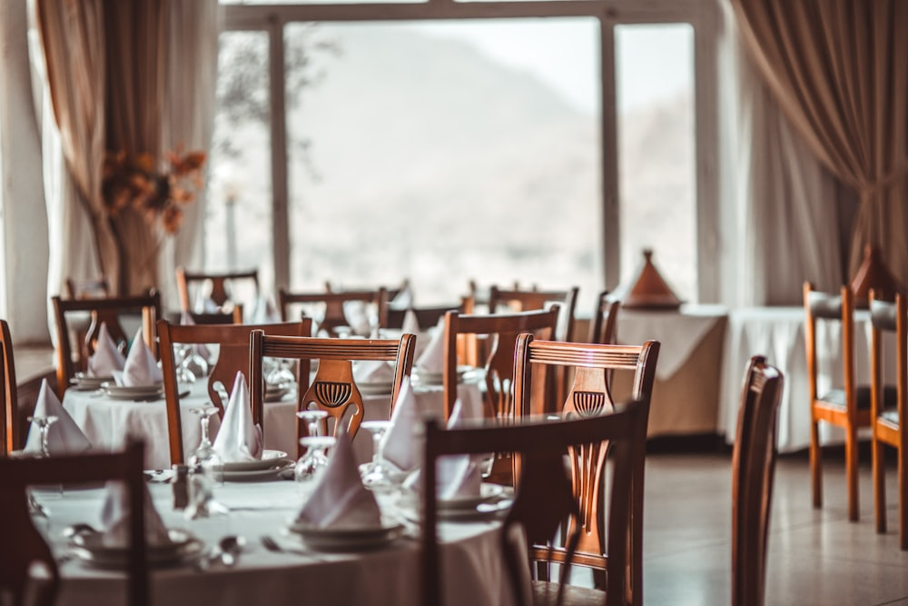

Synchronized Timing
Inform your server of your showtime upon arrival. Our culinary team paces your antipasti, handmade pasta, and main course for an unhurried departure.
Situated right across North Tryon Street from the Belk Theater, Booth Playhouse, and Knight Theater, Luce Ristorante provides Uptown Charlotte’s premier pre-show dining experience, synchronized precisely to your curtain call.

Relaxed three-course fine dining orchestrated to have you seated before the lights dim.
Inform your server of your showtime upon arrival. Our culinary team paces your antipasti, handmade pasta, and main course for an unhurried departure.
Located directly across the Tryon Street pedestrian crosswalk from the Blumenthal Center lobby. No driving or parking shuttles required.
Join us after the performance for late-night espresso, artisanal tiramisù, and authentic Italian grappas or digestivi at the bar.
Sophisticated settings for executive dinners, rehearsals, and celebrations.